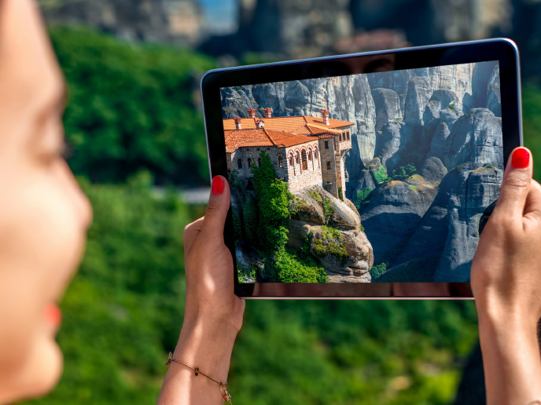

Tecnología y conservación del patrimonio cultural
La tecnología puede ser una herramienta valiosa para la conservación del patrimonio cultural. Por ejemplo, la documentación digital de bienes culturales puede permitir que los sitios sean accesibles para las generaciones futuras, así como ayudar en la restauración y conservación de los sitios. También se han desarrollado herramientas como escaneo láser y drones para evaluar la condición de los sitios culturales y para identificar posibles riesgos. Además, la realidad virtual y la realidad aumentada pueden ser útiles para proporcionar experiencias inmersivas y educativas en los sitios culturales.
